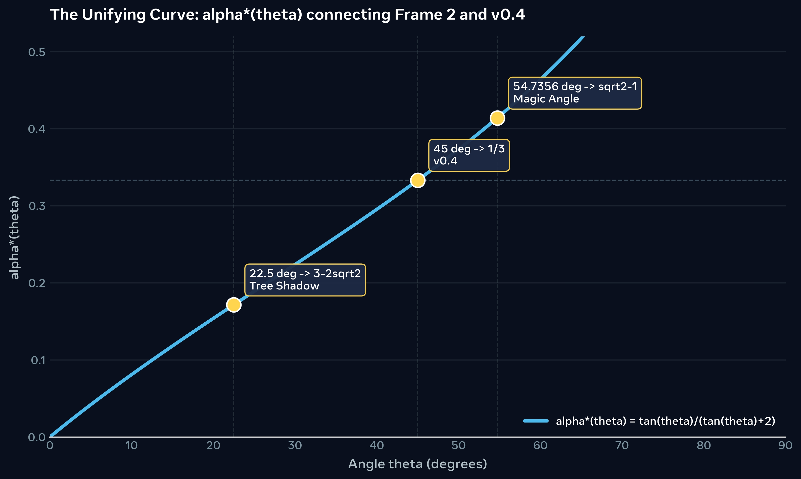

دراسة علاقة رياضية تجمع بين هندسة الشجرة والظل (Frame 2)، والنموذج التكاملي (v0.4)، والزاوية السحرية في الفراغ (Frame 2 §8) — عبر دالة واحدة.
في المختبر، بدأنا بالدالة البنيوية التالية (والتي تعتمد على تعريف نسبة التكامل في v0.4):
عند تعويض الزوايا المرجعية المرتبطة بالإطارات، نحصل على ثلاث قيم دقيقة للدالة. ويعرض هذا المختبر العلاقة الحسابية بينها، دون افتراض أن المرور بهذه النقاط وحده يثبت اشتقاقًا موحدًا من الإطارات.
| الزاوية \(\theta\) | \(\tan \theta\) | \(\alpha^*(\theta)\) | السياق (الإطار) |
|---|---|---|---|
| \(22.5^\circ\) | \(\sqrt{2}-1\) | \(3-2\sqrt{2} \approx 0.1716\) | Frame 2: \(\alpha^* = \tan^2(22.5^\circ)\) (مربع نسبة الظل) |
| \(45.0^\circ\) | \(1\) | \(1/3 \approx 0.3333\) | v0.4: نسبة التكامل عند الحد الحاد \(a=1\) |
| \(\theta_m = \arctan(\sqrt{2})\) \(\approx 54.7356^\circ\) |
\(\sqrt{2}\) | \(\frac{\sqrt{2}}{\sqrt{2}+2} = \sqrt{2}-1 \approx 0.4142\) | Frame 2 §8: الزاوية السحرية (Magic Angle) \(\theta_m = \arccos(1/\sqrt{3})\) |
الرسم التالي يوضح المنحنى \(\alpha^*(\theta)\) مع النقاط الثلاث. تم توليده في Google Colab (رابط قابل لإعادة التشغيل أدناه).

الشكل 1: المنحنى \(\alpha^*(\theta)\) والنقاط الذهبية الثلاث. تم التوليد بواسطة Python/Matplotlib.
العلاقة الحسابية بين قيمة المنحنى عند \(22.5^\circ\) والهوية المثلثية لنصف الزاوية تتبع مباشرة من التعريف المعتمد للدالة:
شرط الحدود في نموذج Zx v0.4 يتطلب \(0 \le a \le 1\). النسبة الهندسية في Frame 2 هي \(r = \tan(22.5^\circ) = \sqrt{2}-1\).
يُعتمد التعيين التالي بوصفه التعيين الهندسي المفضل (Preferred Geometric Identification):
على المجال \(0^\circ \le \theta \le 45^\circ\)، لأنه يحافظ على التفسير المباشر لنسبة الظل إلى الارتفاع، ويعيد إنتاج نسبة Frame 2 عند \(22.5^\circ\)، ويصل إلى الحد الحاد \(a=1\) عند \(45^\circ\).
مع ذلك، فإن شرط الحدود \(0 \le a \le 1\) لا يحدد هذا التعيين بصورة فريدة؛ إذ توجد تعيينات بديلة تحقق الشرط نفسه (مثل \(a = \frac{2\tan\theta}{1+\tan\theta}\)). لذلك فإن تفضيل \(a = \tan\theta\) يستند إلى تفسيره الهندسي المباشر، وليس إلى تفرده الناتج عن شرط الحدود وحده.
أما النقطة \(\theta_m \approx 54.7356^\circ\)، فهي تقع على الامتداد الرياضي للمنحنى \(\alpha^*(\theta)\)، لكنها خارج المجال الزاوي المعتمد لتعيين \(a = \tan\theta\) في نموذج v0.4.
| التعيين | عند \(22.5^\circ\) | عند \(45^\circ\) | الحالة |
|---|---|---|---|
| \(a = \tan\theta\) | 0.414 | 1.000 | مُفضل (Preferred) |
| \(a = \frac{2\tan\theta}{1+\tan\theta}\) | 0.586 | 1.000 | بديل يحقق شرط الحدود |
| \(a = 2\tan\theta\) | 0.828 | 2.000 | غير صالح (يتجاوز 1) |
ملاحظة اصطلاحية: \(a\) هو معامل نموذج Zx v0.4، في حين أن \(\alpha^*\) هي قيمة الدالة المختبرية المعرفة في Section 1. وهما كميتان مختلفتان في التعريف الحالي، ولا يُفترض تساويهما.
الحالة العلمية: تعيين هندسي مفضل؛ أما الاشتقاق الطبيعي الكامل الذي يفرض هذا التعيين دون افتراضه، فما زال هدفاً بحثياً مفتوحاً.
يمكنك إعادة توليد الرسم البياني والتحقق من الأرقام بنفسك عبر Google Colab، أو استعراض الكود مباشرة هنا:
import numpy as np
import matplotlib.pyplot as plt
# تعريف الدالة
theta_deg = np.linspace(0.1, 89.9, 1000)
theta_rad = np.radians(theta_deg)
tan_theta = np.tan(theta_rad)
alpha_star = tan_theta / (tan_theta + 2)
# النقاط الذهبية الثلاث
points = [
(22.5, 3 - 2*np.sqrt(2), r"\(22.5^\circ \rightarrow 3-2\sqrt{2}\) (Tree Shadow)"),
(45.0, 1/3, r"\(45^\circ \rightarrow 1/3\) (v0.4)"),
(54.7356, np.sqrt(2)-1, r"\(54.7356^\circ \rightarrow \sqrt{2}-1\) (Magic Angle)")
]
# الرسم
plt.figure(figsize=(10, 6))
plt.plot(theta_deg, alpha_star, 'b-', linewidth=2, label=r'\(\alpha^*(\theta) = \frac{\tan \theta}{\tan \theta + 2}\)')
# إضافة النقاط
for x, y, label in points:
plt.scatter(x, y, color='red', s=100, zorder=5)
plt.annotate(label, (x, y), textcoords="offset points", xytext=(10, 10), ha='left', fontsize=10, bbox=dict(boxstyle="round,pad=0.3", fc="yellow", alpha=0.5))
# تنسيق
plt.axhline(0, color='black', linewidth=0.5)
plt.axhline(1/3, color='gray', linestyle='--', linewidth=0.8, alpha=0.5)
plt.axvline(22.5, color='gray', linestyle='--', linewidth=0.8, alpha=0.5)
plt.axvline(45, color='gray', linestyle='--', linewidth=0.8, alpha=0.5)
plt.axvline(54.7356, color='gray', linestyle='--', linewidth=0.8, alpha=0.5)
plt.title(r'The Unifying Curve: \(\alpha^*(\theta)\) connecting Frame 2 and v0.4', fontsize=14)
plt.xlabel(r'Angle \(\theta\) (degrees)', fontsize=12)
plt.ylabel(r'\(\alpha^*(\theta)\)', fontsize=12)
plt.legend(fontsize=12)
plt.grid(True, alpha=0.3)
plt.xlim(0, 90)
plt.ylim(0, 0.5)
plt.tight_layout()
plt.show()
الرابط الأصلي: https://colab.research.google.com/drive/12g5BLZi8xv4vtKYR4ejsrXBJz-U53MaE